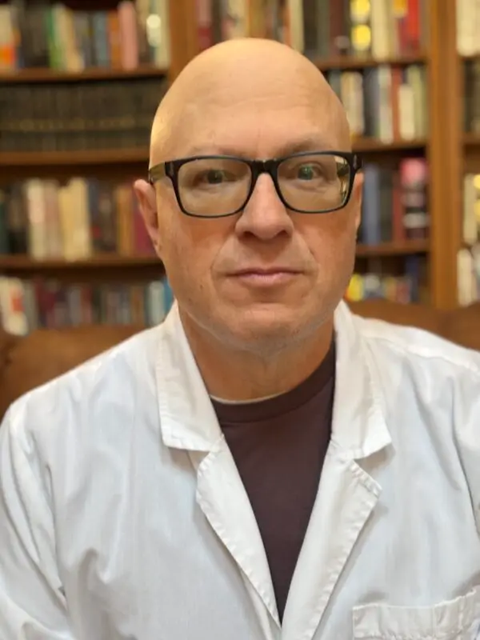

Geriatric & Internal Medicine
Originally from Tempe, Arizona, Dr. Alisky has spent more than twenty-five years in medicine. He earned his BS in biochemistry, summa cum laude, at the University of Arizona, then completed an MD/PhD at Saint Louis University — a PhD in neurobiology (1994) and MD (1996) — followed by an internal medicine residency and a combined geriatrics fellowship and gene-therapy postdoctoral fellowship at the University of Iowa.
His career has spanned rural critical-access medicine in Wisconsin, Colorado's Program of All-Inclusive Care for the Elderly, a hospitalist and assistant clinical professor post at the University of Colorado Denver, and extensive nursing-home and post-acute practice. Today, at Bloom Healthcare, he cares for frail elderly patients in assisted-living and home settings and serves as the group's consultant for memory disorders and dementia-related behaviors, largely through telemedicine.
His clinical focus is the care of older adults — particularly dementia, and helping patients and families avoid futile, invasive procedures that add little to function or quality of life. His research interests center on designing new therapeutics, using case reports as a starting point for clinical investigation, and recognizing the vasculitis, steroid-responsive syndromes, and catatonia that can hide behind a dementia diagnosis. Outside the clinic he hikes, travels, and speaks Russian and Spanish.
Download full CV (PDF)
Dr. Alisky directs the scientific board of the Curing Alzheimer's Disease Foundation, a nonprofit advancing Alzheimer's research, prevention, and education. The foundation funds the Alzheimer's Legacy Lab at the University of Minnesota and runs community programs focused on reducing dementia risk.
Visit the foundation →For families navigating memory loss or a dementia diagnosis, Dr. Alisky welcomes informal questions and is glad to share an informed, science-grounded perspective to help you make sense of what you're facing.
Get in touch →It is rare to find, in a single physician, an MD-PhD neurobiologist with twenty-five years in geriatric medicine who also serves as Director of the Scientific Board of an Alzheimer's research foundation — a depth of clinical experience and scientific understanding to draw on when questions about memory and the aging brain arise.
Fewer than one percent of doctors train as physician-scientists. With a PhD in neurobiology alongside his MD, Dr. Alisky reads — and contributes to — the research literature, and brings that same rigor to how he thinks about the aging brain.
Decades focused on dementia and Alzheimer's have made him expert at distinguishing them from the many conditions that resemble them — including the treatable, sometimes reversible ones that are easy to overlook.
As Director of the Curing Alzheimer's Disease Foundation's Scientific Board, he helps shape research as it unfolds — and keeps his perspective grounded in the newest, best-supported science.
“[ Placeholder — Dr. Alisky on why he went into medicine, and what he hopes to give the patients and families he sees. To be added. ]”
An informal perspective, offered alongside — not in place of — your own physician's care.
A searchable archive of more than sixty peer-reviewed papers, reviews, case reports, and hypotheses — spanning gene therapy, neuroscience, dementia, and clinical pharmacology, from 1990 to 2015 — plus a patent in neural gene delivery. Search by title, author, or journal, or filter by decade.